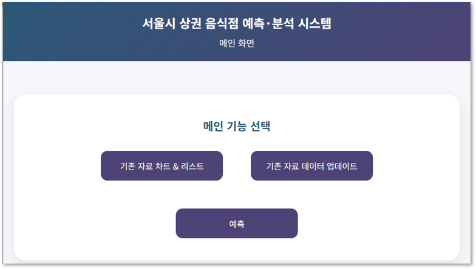
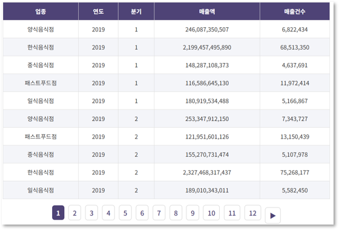
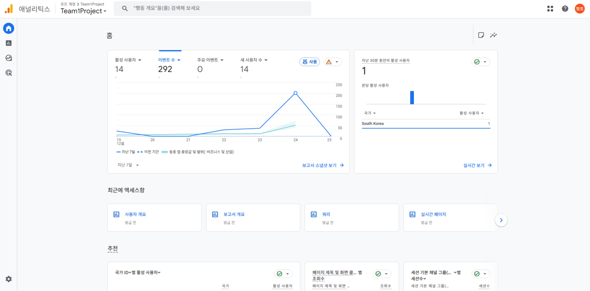

01
GitHub
서울시 상권 분석 서비스




서울시 공공 상권 데이터를 기반으로 음식점 업종별 매출 흐름을 분석·예측하고 시각화한 서비스입니다. Python(Flask)과 Java(Spring Boot)를 연동하는 이중 서버 구조를 설계하고, 팀 내에서 Flask API 설계·데이터 전처리부터 Spring Boot 연동까지 주도적으로 담당했습니다.
담당 업무
- Flask API 설계 및 공공 CSV 데이터 전처리·정제 (pandas)
- Spring Boot Controller·Service 계층 구현
- Flask·Spring Boot 서버 간 REST API 연동 설계
- MySQL 연동 및 MyBatis 기반 데이터 조회 로직 구현